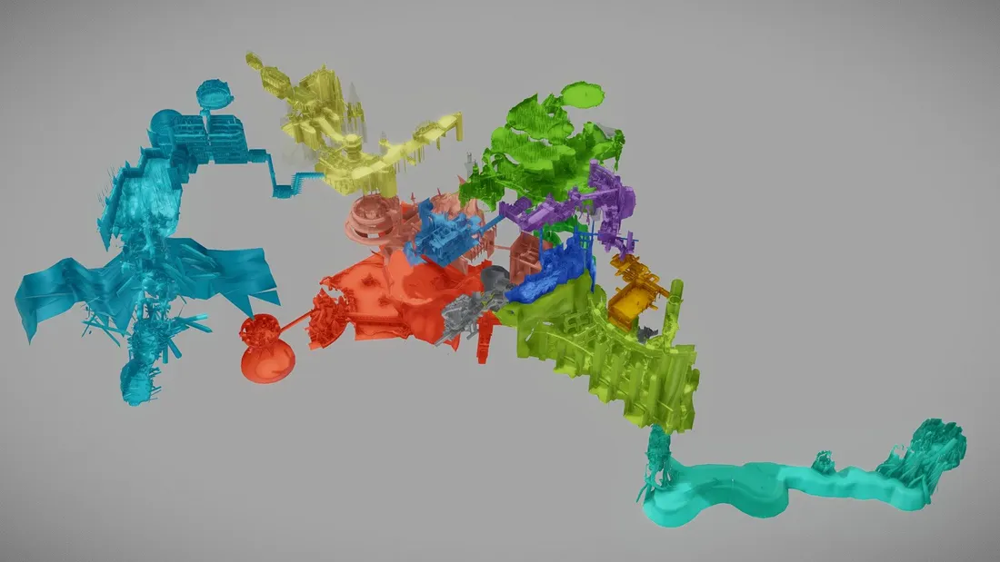
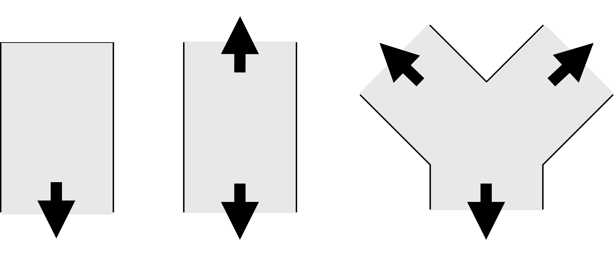
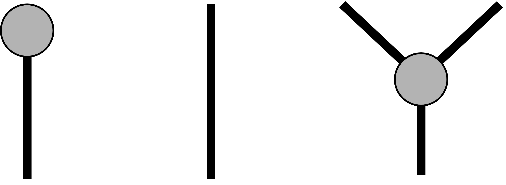
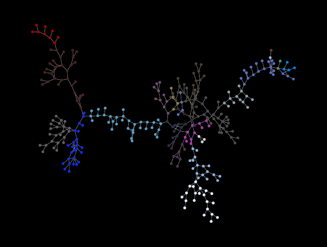
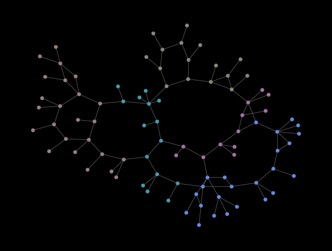
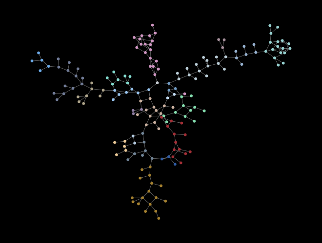
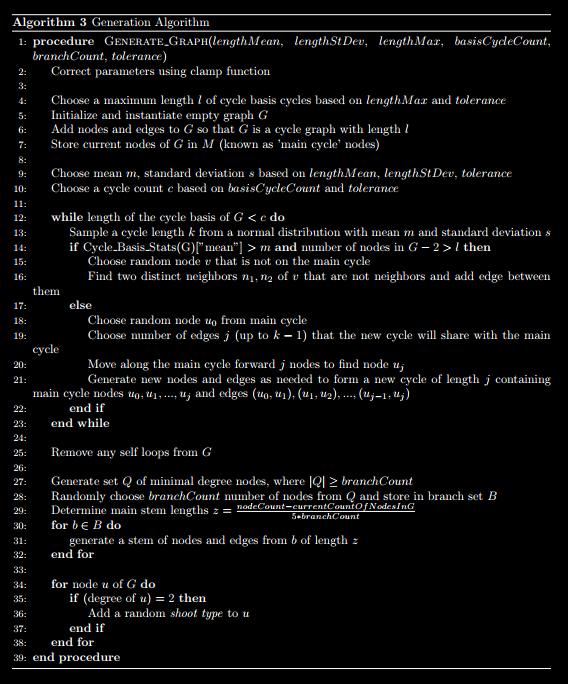
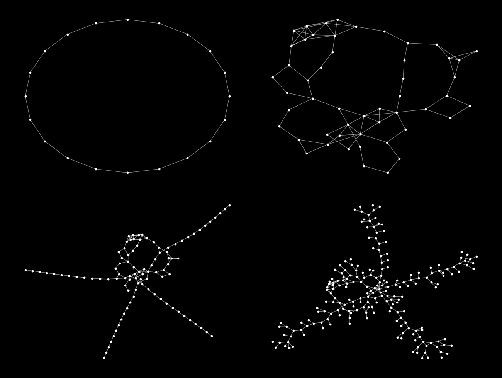
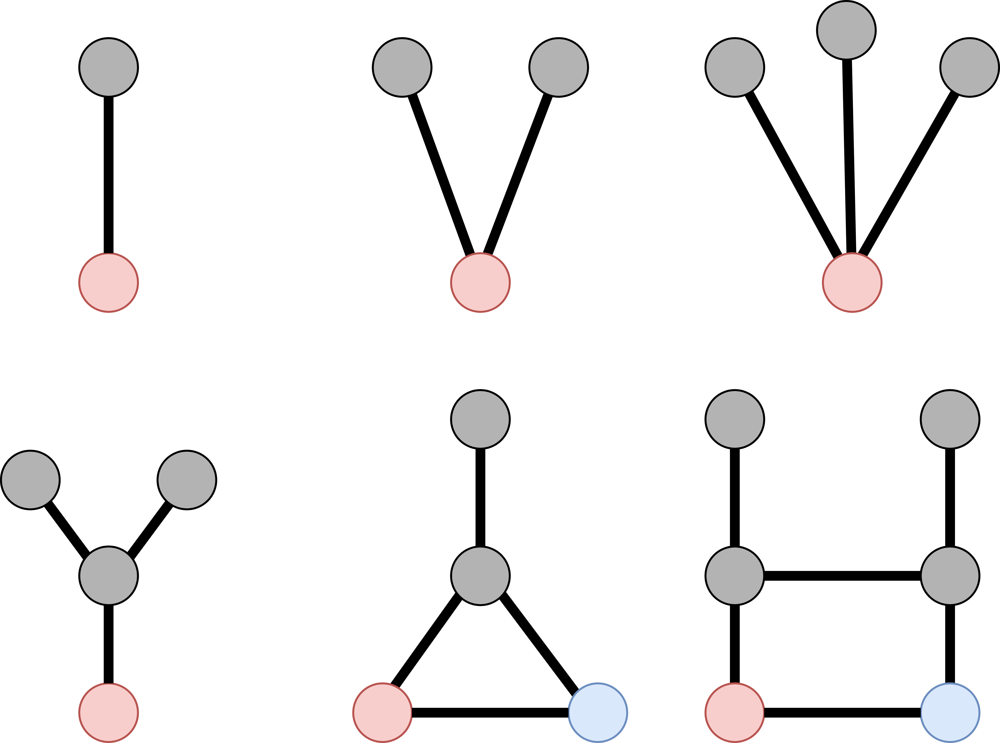

Introduction
Central Question
Shape-based
- Graph theory/Network science
- Mathematical graphs
- Networks
- Computational geometry
- 3D meshes
- Prompt traces in word embedding spaces
- Topological characteristics of point-cloud data
Fuzzy
- Creativity
- Intelligence
- Human enjoyment/pleasure
- Taxonomic classification (in biology)
Game World Graphs
Mathematical/Statistical properties of graphs to Human enjoyment
Paleo Machine Learning
Invariant geometric properties of 3D meshes to Taxonomic classification
MultiPipeline Tool for EEG
Topological characteristics of point cloud data to Creative inspiration
Game World Graphs
Motivation

Critically acclamied for its level design:
- RPGFan. "Best level design ever."
- TheGamer (James Lucas). "Dark Soul's main selling point...is the masterfully interconnected level (game world) design...you don't find shortcuts...you find how one area is connected to the other."
- CBR (Retro-review): "Dark Souls has some of the best level designs in video games, period...Most areas loop back to a previously explored area, making th e game world feel like one giant map."
- GameRant (Matt Karoglou): "Anor Londo is a standout area...showcasing the gold standard of FromSoftware's level design."
- GameWisdom (Josh Bycer): in "The Design Lessons Designers Fail to Learn from Dark Souls:" "The success of Dark Souls has spawned many imitators..." (Includes commentary on the level/world-design as a foundation).
- Mark Brown (Boss Keys, Game Maker's Toolkit): "The world of Dark Souls is a complex maze-like structure that branches into different areas and loops back on itself through shortcuts and elevators." and "The world feels like a 3D jigsaw puzzle, similar to a Metroid map or a Zelda dungeon."

Approach
- Represent game worlds as mathematical graphs/networks
- Compute properties of graphs
- Correlate to enjoyment of game world traversal/exploration
Work
1. Represent game worlds as mathematical graphs/networks
Various methods
- Bauer and Popovic (2012) - RRT-Based Game Level Analysis, Visualization, and Visual Refinement
- Ma et al (2014) - Game Level Layout from Design Specification
- Smith et al (2016) - Graph-based Generation of Action-Adventure Dungeon Levels using Answer Set Programming
- Jadhav and Guzdial (2022) - Clustering-Based Tile Embedding (CTE): A General Representation for Level Design with Skewed Tile Distributions
- Anshar et al (2023) - Progressive Content Generation Based on Cyclic Graph for Generate Dungeon
My method: Decision points





2. Compute properties of graphs
- Graph theoretic
- Connectivity
- Cycle counts (Hamiltonian, Eulerian) (Normalized)
- Diameter, Radius, Girth (Normalized)
- Coloring
- Network science/Statistical
- Degree distribution
- Scale-free (power law) property
- Small-world property
- Assortativity/Disassortativity
- Centrality similarities
- Community structure
- Temporal evolution (how it can evolve via player exploration)
Algorithm for generating similar in structure (based on graph cycles)



3. Correlate to enjoyment of game world traversal/exploration